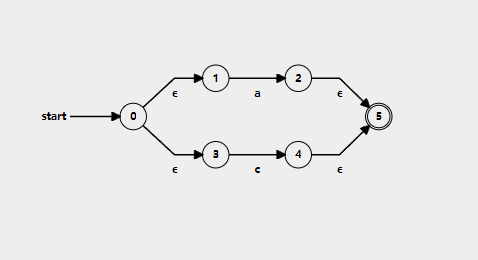

-
1. NFA (Non-Deterministic finite automata)
- NFA stands for non-deterministic finite automata. It is easier to construct an NFA than DFA for a given regular language.
- The finite automata are called NFA when there exist many paths for specific input from the current state to the next state.
- Every NFA is not DFA, but each NFA can be translated into DFA.
- NFA is defined in the same way as DFA but with the following two exceptions, it contains multiple next states, and it contains ε transition.
-
2. Regular Expression
- The language accepted by finite automata can be easily described by simple expressions called Regular Expressions. It is the most effective way to represent any language.
- The languages accepted by some regular expressions are referred to as Regular languages.
- A regular expression can also be described as a sequence of patterns that defines a string.
Thompson's algorithm is a method for converting a regular expression into an equivalent nondeterministic finite automaton (NFA). The algorithm uses a set of rules to construct the NFA based on the structure of the regular expression, including handling concatenation, union, and the Kleene star. The resulting NFA can then be used to efficiently match the pattern defined by the original regular expression.
Rules to convert RE to NFA
1.Symbol (a) (basic RE)
- Create two states start state and accept state (final).
- Add a transition from start state to accept state labelled 'a'.
- Mark the final/accept state.
for example:
- Regular Expression:"a"
2. Concatenation (ab):
- Create an NFA for the character 'a':
- Create a start state and an accept state.
- Add a transition labeled 'a' from the start state to the accept state.
- Create an NFA for the character 'b':
- Create a start state and an accept state.
- Add a transition labeled 'b' from the start state to the accept state.
- Connect the NFAs for 'a' and 'b' to represent the concatenation:
- Merge the accept state of the NFA for 'a' with the start state of the NFA for 'b', and remove the accept state of the NFA for 'a'.
for example:
- Regular Expression:"ab"
3. Union (a|b):
- States:
- New Start State
- New Final State
- Transitions:
- Add ε-transitions from the New Start State to the start states of the existing NFAs.
- Add ε-transitions from the accepting states of the existing NFAs to the New Final State.
- Note:
- When the union operation is performed, 4 ε-transitions are used in total:
- 2 ε-transitions for connecting the New Start State to the existing NFAs
- 2 ε-transitions for connecting the accepting states of the existing NFAs to the New Final State
for example:
- Regular Expression:"a|c"

4. kleene closure (a)*:
States:
- New Start State (S₀)
- New Accept State (F₀)
Transitions:
- Add ε-transition from New Start State (S₀) to the original start state of the expression.
- Add ε-transition from the accept state of the expression back to the original start state.
- Add ε-transition from original accept state to New Accept State (F₀).
- Add ε-transition from New Start State (S₀) directly to New Accept State (F₀) for zero occurrences.
Note:
- When applying the Kleene closure function, 4 ε-transitions are used in total:
- 2 ε-transitions for connecting the New Start State to the original start state and back to the original start state
- 1 ε-transition for connecting the original accept state to the New Accept State
- 1 ε-transition from the New Start State directly to the New Accept State for zero occurrences
for example:
- Regular Expression:"a*"